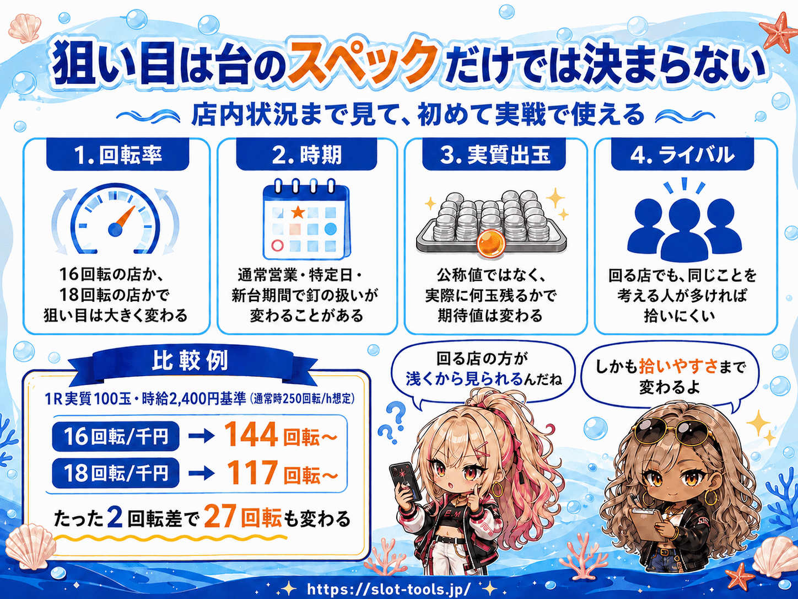

9月7日に「PA大海物語Withアグネス・ラムPE」が導入されます。
この記事を見に来た人が一番知りたいのは、たぶんこれですよね。
「結局、何回転から打てるの？」
まずそこから答えます。
1Rあたりの実質出玉を100玉、時給2,400円を基準にすると、
- 16回転/千円なら 144回転〜
- 17回転/千円なら 131回転〜
- 18回転/千円なら 117回転〜
このあたりが打ち始めの目安になります。
ただ、この記事で伝えたいのは「131回転から打てばOK」みたいな話だけではありません。
むしろ大事なのはその先です。
同じアグネスでも、
**その店で何回るのか？
実際に何玉取れるのか？
いつ釘が動くのか？
ライバルがどれくらいいるのか？**
ここまで考えると、同じ131回転でも「打つ店」と「打たない店」が出てきます。
なので今回は、期待値表を出すだけではなく、
自分の行く店でどう使えばいいのか
まで考えてみます。
まずスペックを簡単に
細かいところは一旦置いておいて、遊タイム狙いで必要な部分だけ。
- 大当り確率：低確1/99.9・高確1/19.5
- ST突入率：100%
- ST：10回転
- 時短：90回／40回／15回
- 遊タイム：低確率239回転消化で時短10,000回
- 公称出玉：1080／648／432個
遊タイムに入ると時短10,000回。
まあ、実質当たるまで回ります。
期待値を見てみる
今回の計算では、実戦上はデータカウンター250回転で遊タイム突入として扱っています。
過去のアグネス系と同じく、ST10回転はデータカウンターに加算されない想定です。
ただ、この記事を書いている時点ではまだ導入前。
ここは実際に打って確認します。
違っていたら普通に修正します。
また、ラムクリア後0回転だけは、内部的には低確239回転なので、期待値も239回転で計算しています。
条件は4円等価・25玉交換。
出玉は公称108玉/Rですが、実戦では当然そのまま108玉取れるわけではありません。
そこで今回は、大当り後の電サポ中の増減まで含めた実質値として、
- 105玉
- 100玉
- 90玉
の3パターンで計算しています。
それと、当たって時短が終わったあとには残保留が5個ほど残ります。この分の抽選は、連チャンの引き戻しとして計算に含めています。
1R実質105玉
等価ボーダーは約16.1回転です。
| カウンター表示 | 遊タイムまで | 14.0 | 15.0 | 16.0 | 17.0 | 18.0 | 備考 |
|---|---|---|---|---|---|---|---|
| 0（ラムクリア後） | 239 | −836 | −403 | −24 | +310 | +607 | |
| 30 | 220 | −706 | −282 | +89 | +416 | +706 | 時短15抜け |
| 55 | 195 | −493 | −84 | +274 | +589 | +870 | 時短40抜け |
| 105 | 145 | +134 | +499 | +818 | +1,100 | +1,351 | 時短90抜け |
| 150 | 100 | +1,041 | +1,343 | +1,607 | +1,840 | +2,047 | |
| 200 | 50 | +2,671 | +2,859 | +3,023 | +3,168 | +3,297 |
1R実質100玉
僕としては、とりあえずこのあたりを中心に見ています。
等価ボーダーは約16.9回転。
| カウンター表示 | 遊タイムまで | 14.0 | 15.0 | 16.0 | 17.0 | 18.0 | 備考 |
|---|---|---|---|---|---|---|---|
| 0（ラムクリア後） | 239 | −1,106 | −673 | −295 | +39 | +336 | |
| 30 | 220 | −977 | −553 | −182 | +145 | +436 | 時短15抜け |
| 55 | 195 | −763 | −355 | +3 | +319 | +599 | 時短40抜け |
| 105 | 145 | −137 | +228 | +548 | +830 | +1,080 | 時短90抜け |
| 150 | 100 | +771 | +1,072 | +1,336 | +1,569 | +1,776 | |
| 200 | 50 | +2,400 | +2,588 | +2,752 | +2,898 | +3,027 |
1R実質90玉
かなり出玉が厳しい場合も見ておきます。
等価ボーダーは約18.8回転です。
| カウンター表示 | 遊タイムまで | 14.0 | 15.0 | 16.0 | 17.0 | 18.0 | 備考 |
|---|---|---|---|---|---|---|---|
| 0（ラムクリア後） | 239 | −1,648 | −1,215 | −836 | −502 | −205 | |
| 30 | 220 | −1,518 | −1,094 | −723 | −396 | −106 | 時短15抜け |
| 55 | 195 | −1,305 | −896 | −538 | −223 | +58 | 時短40抜け |
| 105 | 145 | −678 | −313 | +6 | +288 | +539 | 時短90抜け |
| 150 | 100 | +229 | +531 | +795 | +1,028 | +1,235 | |
| 200 | 50 | +1,858 | +2,047 | +2,211 | +2,356 | +2,485 |
こうして並べると結構分かりやすいです。
同じアグネスでも、
- 105玉なら16.1
- 100玉なら16.9
- 90玉なら18.8
までボーダーが動きます。
これはラムクリア後の0回転から当たるまでのボーダーです。当たった後も同じ台を打ち続けて1日打ち切る場合は、時短抜けの位置から再スタートになるので少し甘くなって、105玉なら15.3、100玉なら16.1、90玉なら17.9くらいです。
なので、
「アグネスのボーダーは16.9です」
だけだと、実戦ではちょっと足りないんですよね。
実際にどれくらい玉が取れているのかまで見ないと、本当のところは分かりません。
じゃあ、何回転から打つの？
ここで最初の話に戻ります。
期待値がプラスになるところから全部打つ、という考え方もあります。
ただ、僕はスロットも打つので、パチンコだけ別の基準にはしたくありません。
そこで今回は、比較用として時給2,400円を使っています。
スロットで機械割105%くらいの台を打った場合の時給を約2,400円として、
「このスロットと、この遊タイムならどっちを打つ？」
を同じ数字で考えるためです。
当然ですが、時給2,400円未満は打ってはいけない、という意味ではありません。
スロットに何もなければ、時給1,500円でも2,000円でも遊タイムを打つことはあります。
僕も期待値1,000円程度なら普通に打つことがあります。
要は比較するための基準です。
時給2,400円になる打ち始めライン
| 1R実質 | 14.0 | 15.0 | 16.0 | 17.0 | 18.0 |
|---|---|---|---|---|---|
| 105玉 | 155〜 | 144〜 | 131〜 | 116〜 | 98〜 |
| 100玉 | 164〜 | 155〜 | 144〜 | 131〜 | 117〜 |
| 90玉 | 180〜 | 173〜 | 165〜 | 157〜 | 148〜 |
（通常時250回転/h想定）
1R100玉で見ると、
**16回転なら144〜。
18回転なら117〜。**
たった2回転/千円違うだけで、狙い目が27回転変わります。
この差はかなり大きいです。
「この店の回転率」が分かると立ち回りが変わる
ここからが、僕としては結構大事なところです。
例えば、普段行く店がパチンコにあまり力を入れていなくて、イベント日でも16回転くらいしか回らないとします。
1R100玉なら、時給2,400円ラインは144回転くらい。
だったら極端な話、
「この店では140前半までほぼ見なくていいな」
と判断できます。
いちいち全部の台を細かく計算しなくてもいい。
逆に18回転くらい回る店なら、117回転を目安にデータカウンターを見ていけばいい。
110回転台ですよ。
普通のお客さんから見たら、まだそこまでハマっている感じはしないと思います。
つまり回る店では、
期待値が高くなるだけじゃなく、他の人がまだ気にしない浅いところから打てる
というメリットがあります。
これ、拾いやすさにもかなり関係してきます。
16回しか回らない店だと144くらいまで待たないといけない。
そこまでハマっていれば、遊タイムを詳しく知らない人でも普通に座る可能性があります。
一方、18回回るなら110台から見られる。
だから単純に、
「回る店だから得」
だけではないんですよね。
回ることで狙い目が浅くなって、結果的にライバルとぶつかる前の台まで触れる可能性があります。
店は「どれくらい回るか」だけ見ればいいわけでもない
ただし、18回回る店なら絶対にいいかというと、そうでもありません。
同じことを考えている人が10人いたら、117なんてまず空きません。
逆に16回くらいしか回らない店でも、遊タイムを狙っている人が全然いなければ、深い台が普通に残るかもしれません。
なので僕が見たいのは、
- 普段どれくらい回るのか
- 特定日や新台期間でどれくらい変わるのか
- 何回転くらいで捨てられることが多いのか
- 遊タイムを意識している人がどれくらいいるのか
このあたりです。
あと、「この店は18回る」だけじゃなくて、
いつ18回るのか
も結構重要です。
普段16だけどイベント日は18。
新台期間だけ甘い。
海だけ扱いがいい。
こういう店ごとの癖が分かってくると、
**「今日はこの店だから140でも見る」
「今日は通常営業だから150未満は見ない」**
みたいな判断ができるようになります。
そして一番大事なのは再現性です。
たまたま1日よく回った台があっても、それが次も続くのかどうか。
同じ条件（曜日・イベント・時期）で何度か記録して、同じように回るなら、それは店の癖として使えます。
1回だけの数字は、まだ「情報」であって「基準」ではありません。
もう1つ、同じ店でも台ごとに回転率は違います。
釘だけでなく、台のネカセ（傾き）でも回り方が変わります。
だから台ごとに釘やネカセの評価を残しておくと、次に座るときの判断がかなり早くなります。
遊タイム実戦ツールには、台ごとに釘・ネカセの評価を記録して、その条件で回転率を絞り込んで見る機能を入れてあります。
「この台はネカセが悪いから、同じ店でも1回転落ちる」みたいなことが、記録から見えてきます。
僕はこの辺まで含めて「店内状況」だと思っています。

ボーダーや期待値表は「答え」じゃなくて基準
ネットに出ているボーダーや期待値表はもちろん大事です。
僕も使います。
ただ、そこに書いてある数字をそのまま暗記するより、
自分が行く店の数字に置き換えていく
方が大事だと思っています。
だから、僕としては
**公開されている数字を見る
↓
自分で実測する
↓
自分の店の数字に変えていく**
この流れが一番大事かなと思っています。
スロットとパチンコを同じ基準で見る
僕が今回、わざわざ時給まで出した理由もここです。
スロットだと、
「機械割105%」
「期待値2,000円」
みたいな話を普通にします。
でもパチンコになると急に、
「ボーダー17回」
「遊タイムまで150回」
みたいに物差しが変わる。
別に分ける必要はないと思うんですよね。
最終的にはどちらも、時間を使って期待値を積むものです。
だったら時給にして比べればいい。
スロットに時給2,400円の台があればそっち。
何もなければパチンコ島を見る。
アグネスに時給1,500円とか2,000円の台が残っていたら、それを打つ。
逆にパチンコで3,000円あるなら、無理にスロットにこだわる必要もない。
パチンコとスロットを同じ数字で比べる。
これができるだけでも、立ち回りの幅はかなり広がると思っています。
導入後は実際に測っていく
この記事は導入前に書いているので、まだ仮定の部分もあります。
確認したいのは、
- 大当り後の電サポまで含めて、平均的に何玉取れるのか（1R実質玉数）
- 遊タイム中に平均的にどれくらい玉が減るのか
- 通常時に1時間でどれくらい回せるのか
このあたりです。
ここは導入後、実際に打ちながら確認していきます。
遊タイム実戦ツールでは、回転率や1R平均出玉を記録できるようにしています。
最初はこの記事の数字を参考にする。
そこから打つたびに、
**「この店の回転率は？」
「実際に何玉取れてる？」**
という数字を貯めていく。
そうすれば、
「ネットに131回転からって書いてあったから打つ」
ではなく、
「この店はこれくらい回るし、出玉もこれくらい取れてるから、この辺から打つ」
という判断ができるようになります。
僕は、こっちの方が立ち回りとしてはずっと大事だと思っています。
まとめ
アグネスPEは遊タイムが浅いので、かなり面白い立ち回りができそうです。
ただ、
「何回転から打つか」だけ覚えて終わり
ではもったいないです。
同じ1R100玉でも、
16回転なら144〜。
18回転なら117〜。
これだけで27回転も変わります。
さらに、
- 店の釘
- 時期
- 出玉
- ライバル
まで見れば、同じ機種でも立ち回りはかなり変わります。
期待値表やボーダーは、答えそのものではありません。
自分の店でどう動くかを考えるための基準。
僕はそう考えています。
パチンコでもパチスロでも、
**測る。
積み上げる。
比較する。**
結局やることは同じです。
その中から、その時一番いい台を選ぶ。
アグネスPEも導入後に実測を追加しながら、自分の店で使える狙い目に変えていきます。
遊タイム実戦ツールはこちら。
→ https://slot-tools.jp/yutime-v3.html
計算の前提と手順はすべて公開しています。誤りがあれば指摘してください。転記は引用元とこの記事URLの明記を条件に自由です。